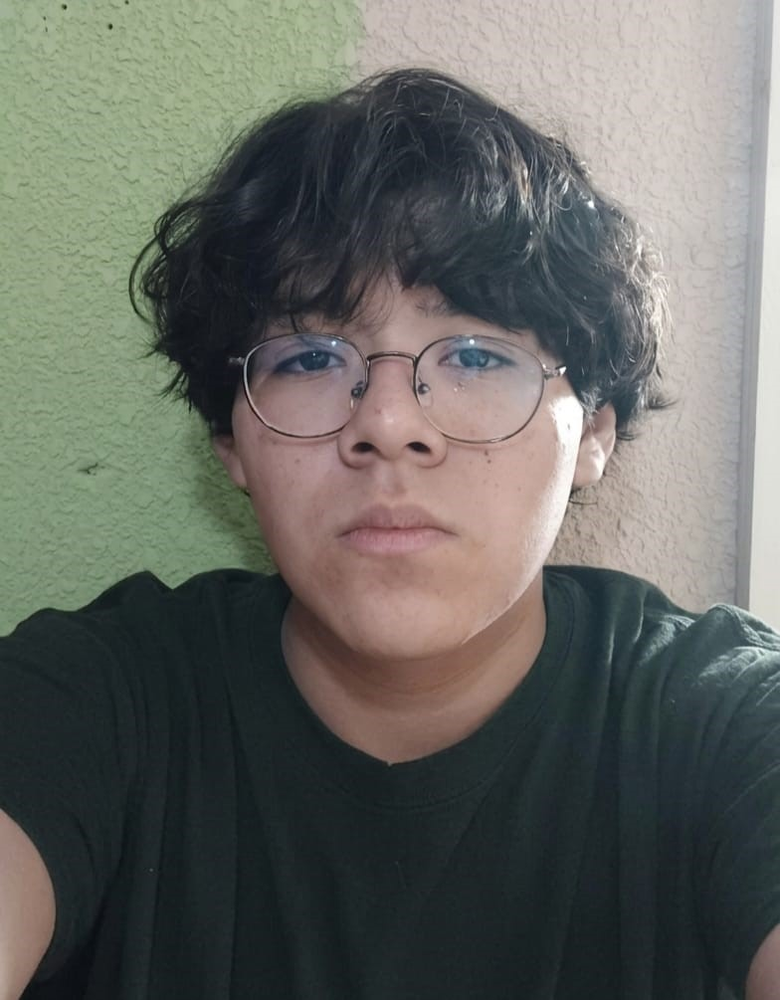

Primer semestre de Ingeniería en Sistemas de Información y Ciencias de la Computación
Este sitio web funciona como un portafolio personal y académico, donde se presentan los proyectos desarrollados durante el primer semestre de la carrera de Ingeniería en Sistemas. Su objetivo principal es mostrar de forma ordenada las competencias adquiridas, los aprendizajes obtenidos y el proceso de crecimiento que he tenido en distintas áreas relacionadas con la tecnología, la investigación, la lógica, la contabilidad y el desarrollo humano.
Más que una página únicamente de videos, este portafolio busca servir como una evidencia completa del trabajo realizado. En cada apartado se muestran descripciones de los proyectos, objetivos, aprendizajes, capturas de pantalla y material audiovisual que permite comprender mejor el desarrollo de cada actividad.
El diseño del sitio fue creado utilizando HTML, CSS, Visual Studio Code, GitHub y GitHub Pages. Además, se utilizó normalize.css para mejorar la compatibilidad visual entre navegadores y mantener una base más uniforme en la presentación del contenido.

Mi nombre es Christian Ricardo Chavac Portillo. Soy un joven estudiante universitario de 18 años que actualmente cursa el primer año de Ingeniería en Sistemas en la Universidad Mariano Gálvez. Estoy iniciando mi camino dentro del mundo de la tecnología, la programación y el desarrollo web, aprendiendo paso a paso las bases necesarias para crear proyectos más completos, ordenados y funcionales.
Me gusta programar porque representa una forma de resolver problemas utilizando lógica, creatividad y paciencia. Para mí, cada error en el código no es solamente una dificultad, sino una oportunidad para aprender, analizar mejor la situación y encontrar una solución. Aunque todavía estoy en una etapa inicial, tengo interés en seguir mejorando mis conocimientos y desarrollar una mentalidad más técnica y profesional.
También me gusta enfrentar retos que me obliguen a salir de mi zona de comodidad. Considero que superar mis propios límites es una parte importante de mi crecimiento personal y académico. Cada proyecto realizado durante este semestre me ha ayudado a comprender que la ingeniería no se trata únicamente de memorizar conceptos, sino de aplicarlos, equivocarse, corregir y mejorar constantemente.
Actualmente cuento con conocimientos básicos en desarrollo web, principalmente en HTML, CSS, uso inicial de Visual Studio Code y GitHub. Me encuentro en proceso de fortalecer mi lógica de programación, organización de proyectos y manejo de herramientas profesionales. Mis habilidades blandas más destacadas son la creatividad, la paciencia para aprender, la adaptabilidad y la disposición para mejorar continuamente.
En esta sección se presentan mis habilidades técnicas actuales relacionadas con computación, programación, desarrollo web y organización de proyectos digitales. Los porcentajes reflejan un avance realista, considerando que todavía estoy en una etapa inicial de aprendizaje.
Sé crear la estructura de una página web, agregar títulos, párrafos, secciones, imágenes y enlaces. Todavía necesito practicar formularios, tablas, etiquetas semánticas y buenas prácticas.
Puedo modificar colores, fondos, tamaños, sombras, márgenes, bordes y degradados. Aún debo reforzar diseño responsive, flexbox, grid, variables, animaciones y orden profesional.
Ya utilizo Visual Studio Code para editar código, crear archivos y organizar el proyecto. Todavía estoy aprendiendo a dominar extensiones, terminal, control de versiones y una estructura más limpia.
Ya he logrado subir proyectos, hacer commits y sincronizar cambios, pero todavía sigo aprendiendo a clonar repositorios, resolver errores, manejar ramas y trabajar de forma colaborativa.
Tengo bases por el curso de Lógica en Sistemas, condiciones, circuitos y análisis lógico. Aún necesito aplicarlo más directamente en programación con variables, condicionales, ciclos, funciones y algoritmos.
Es una tecnología que todavía no he trabajado mucho dentro de mis proyectos. Sé que será importante aprenderla para crear páginas más interactivas y dinámicas.
Considero que tengo creatividad y buen gusto visual para combinar colores, secciones e ideas. Sin embargo, todavía debo aprender más sobre estructura profesional, accesibilidad, experiencia de usuario y diseño adaptable.
Sé ordenar secciones, archivos, evidencias e imágenes, pero debo mejorar en estructuras profesionales, nombres claros, carpetas limpias y documentación técnica.
Las habilidades blandas son importantes dentro de la programación porque ayudan a mantener constancia, resolver problemas, comunicar ideas y adaptarse a los cambios. Aunque todavía estoy aprendiendo, estas habilidades me permiten avanzar con mayor seguridad.
Me gusta que los proyectos tengan estilo propio y que no se vean simples o vacíos. Busco combinar ideas visuales con orden y claridad.
Aunque a veces me frustro o me canso cuando algo no sale bien, sigo preguntando, corrigiendo y practicando hasta entender mejor.
Intento buscar soluciones cuando aparecen errores, aunque todavía necesito apoyo para resolver problemas técnicos más complejos.
He mejorado al ordenar documentos, código y proyectos, pero sigo desarrollando más disciplina técnica y mejor planificación.
Puedo explicar lo que hice de forma sencilla, aunque todavía debo fortalecer mi vocabulario técnico y expresarme con más seguridad.
Tengo interés por aprender, investigar y mejorar, pero todavía necesito acompañamiento para avanzar en temas completamente nuevos.
Cuando algo cambia, como modificar el diseño del portafolio o usar nuevas herramientas, intento ajustarme y seguir aprendiendo.
Este resumen muestra una visión general de mi avance actual. No representa un dominio total, sino una medición honesta del punto en el que me encuentro como estudiante de primer año.
Este apartado estará destinado para agregar mis medios de contacto, correo institucional, redes profesionales o enlaces relacionados con mi trabajo académico y tecnológico.
Por el momento, esta sección queda preparada para completarse más adelante.